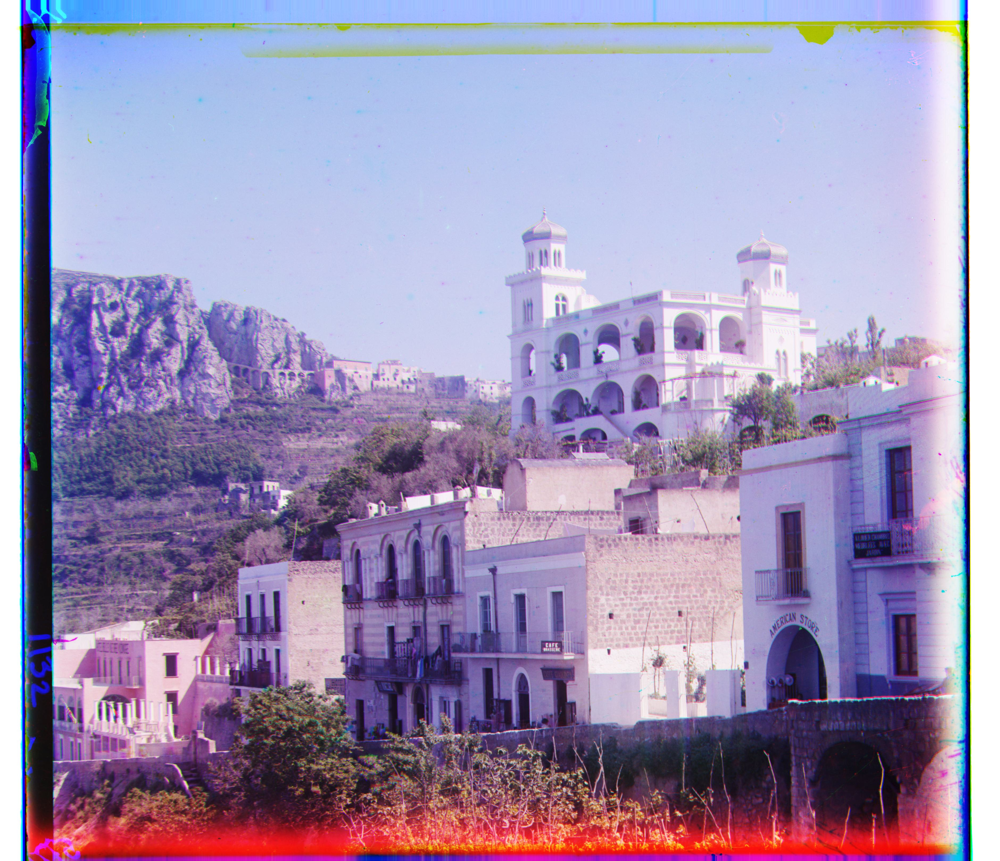
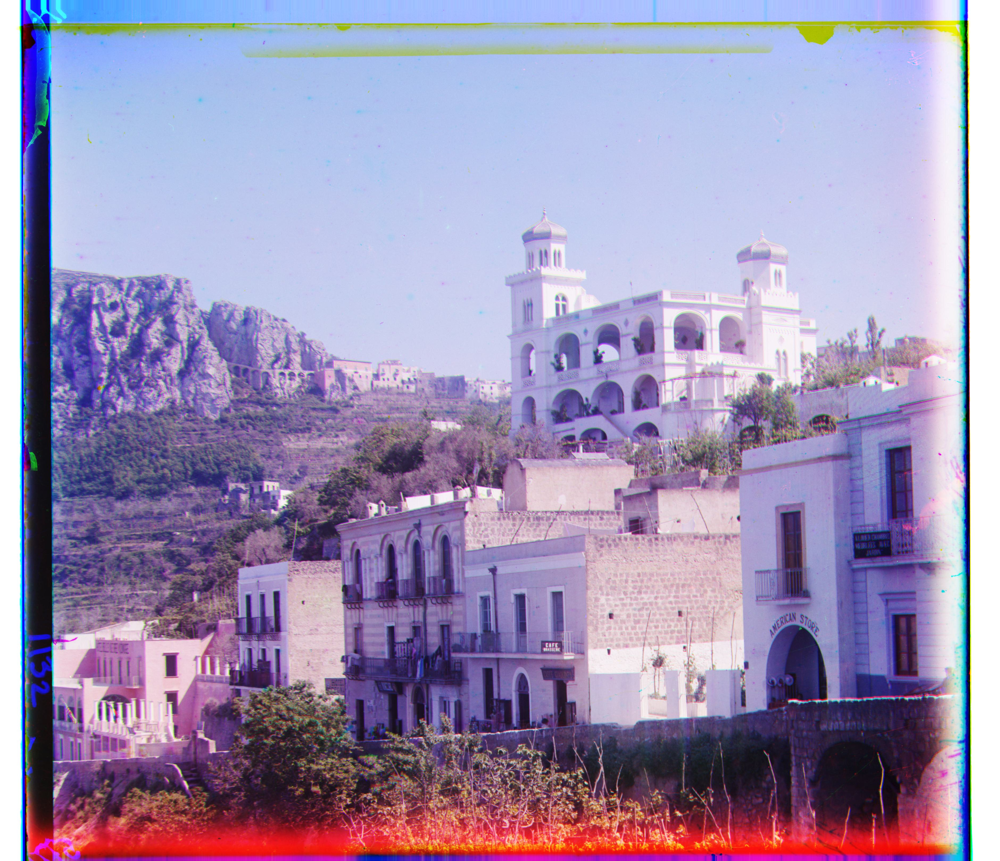

Introduction
The goal of this assignment is to take the digitized Prokudin-Gorskii glass plate images and, using image processing techniques, automatically produce a color image with as few visual artifacts as possible. In order to do this, you will need to extract the three color channel images, place them on top of each other, and align them so that they form a single RGB color image.
Section 1: Methods Used
Approach
Describe your approach to addressing the main topic of this section. Include any relevant methodologies, algorithms, or techniques you used.
Results
 

Section 2: Images
Approach
Here we present all generated images.
Images
Results


Data
| Image | RED Displacement | GREEN Displacement |
|---|---|---|
| Item |
Conclusion
Summarize your findings, discuss the implications of your results, and suggest potential areas for future work or improvement.